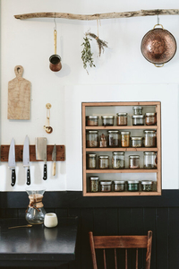

Restore your body, create mindful habits, renew your energy with a holistic lifestyle. SHOW ME HOW
Holistic Health & Healing for The Modern Women
I’m a Holistic Health Coach providing an action plan to s so you can confidently restore balance from When working with me,we dig deep to get to the root cause that holds you back from yourpotential. I will explore dietary habits and the behaviors behind those choices,introduce a routine that nourishes beyond what is on the plate.

Hi,I'm Kate
My career as a high-profile sommelier, wine educator and private chef was starting to wreak havoc on my health - physically, mentally, spiritually. And so I started listening to my own body. For the first time. And each intuitive choice of what to cook,
eat and share led me to take on more healthy habits. After many requests for planning out a healthy day of cooking and eating led to a gradual shift in mindset, of my own, and those in my life, I paid attention. I honor my wellness journey
as it evolves and want to lead others to also find clarity and direction by taking ownership of their own health.
Holistic Health Coaching Can Help You Feel
Empowered
Redirect all those positive traits that made you successful towards the business of your health! You will be given the best tools and suggestions to get going.
Energized
Let's start with a great morning ritual and see how that immediately sets the tone and rhythm for the day. The habits that stick are ones that you build slowly, moments at a time.
Motivated
You know how much better you can feel with a lot of individual, dedicated support from one who has done the work herself. I work closely with you within the goals we set...together.